In this tutorial, you will perform a targeted analysis in Skyline with PRM, DIA and DDA measurement data.
The four samples used for this tutorial were generated by mixing HeLa protein digest with PROCAL peptide standard1 at defined concentrations. Each sample was measured with three technical replicate injections in PRM, DIA and DDA mode on a Quadrupole-Orbitrap-Iontrap (Tribrid) mass spectrometer (Eclipse, Thermo).
Credits: The samples for this tutorial were measured by the BayBioMS@MRI at TU Munich. The tutorial was written by Julia Mergner and Christina Ludwig.
To start this tutorial, download the following ZIP file:
https://skyline.ms/tutorials/AcquisitionComparisonMzml.zip
Extract the files in it to a folder on your computer, like:
C:\Users\brendanx\Documents
This will create a new folder:
C:\Users\brendanx\Documents\AcquisitionComparisonMzml
If you have been using Skyline prior to starting this tutorial, it is a good idea to revert Skyline to its default settings. To do so:

The document settings in this instance of Skyline have now been reset to the default.
Since this tutorial covers a proteomics topic, you can choose the proteomics interface by doing the following:

Skyline is operating in proteomics mode which is displayed by the protein icon  in the upper
right-hand corner of the Skyline window.
in the upper
right-hand corner of the Skyline window.
To start this tutorial, you will first load a previously generated experimental spectral library called PROCAL.blib. This library file contains experimental spectra for all the 41 PROCAL peptides (proteome tools project, Zolg et al., 2017), which are the target peptides of this tutorial. The PROCAL.blib file was generated with Skyline by loading a DDA measurement file of the PROCAL peptides together with the MaxQuant search result file (msms.txt).
To load this experimental spectra library file:
Skyline has now added “PROCAL” to the Libraries list in the Library tab of the Peptide Settings window.
The Peptide Settings - Library tab should now look like this:
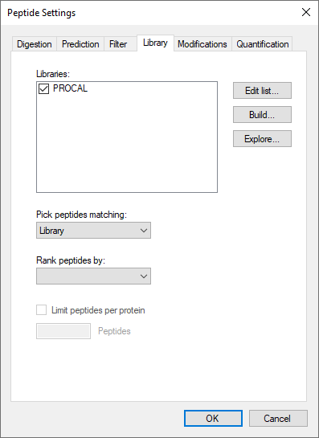
You can explore the loaded PROCAL library:
A Spectral Library Explorer window will open, which will show you all peptides entailed in the loaded library file (for the PROCAL library it is 44 peptides in total), their corresponding spectra as well as raw file and retention time information:
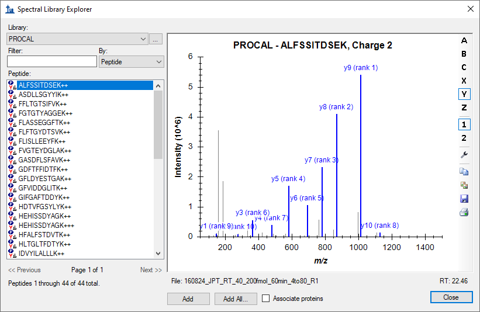
To specify your proteins of interest you can import a FASTA file containing exclusively your target proteins via the Import function.
The Skyline main window should now look like this:
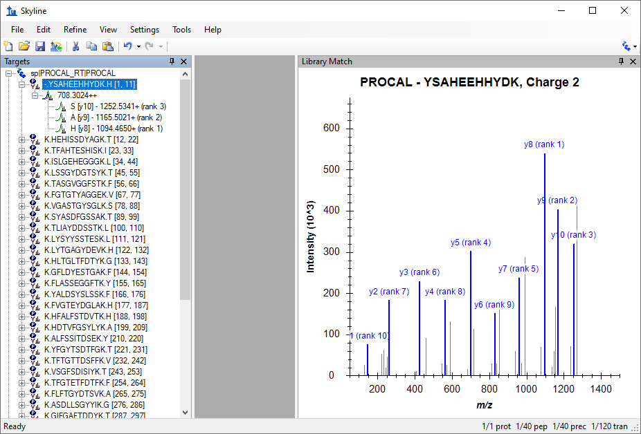
Skyline now highlights the y-ions in blue and the b-ions in purple in the spectrum graph.
By default, Skyline chooses the 3 most intense singly-charged product y-ions as the transitions it will target for doubly charged precursors. This selection can be seen when opening a peptide in the Targets window by clicking on the box with "+" in front it:
To change the product ion selection setting from the default values, perform the following steps:
The Transition Settings – Filter tab should look like this:
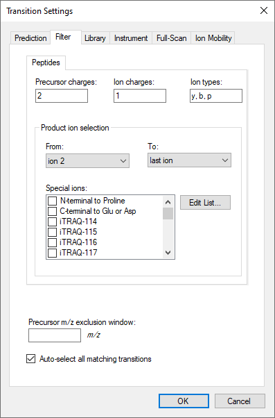
The Transition Settings - Library tab should look like this:

The Transition Settings - Instrument tab should look like this:
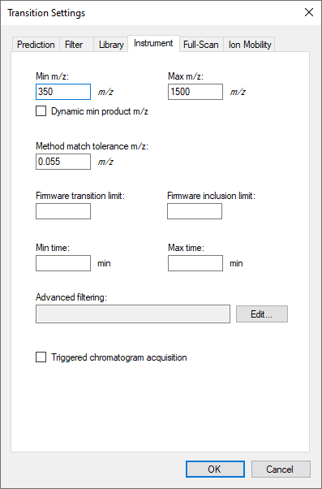
The Transition Settings - Full-Scan tab should look like this:
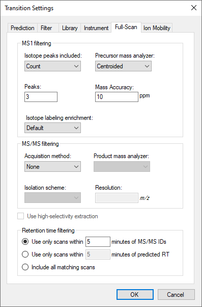
The Skyline Targets tree should now look like this:
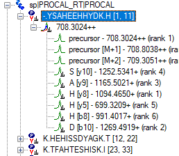
Skyline has picked the top 6 ranked product ions for each peptide precursor, including b-ions, based on the spectral library file (“PROCAL.blib”) you provided in the first step of this tutorial, as well as 3 precursor isotopes (irank 1,2,3) for each peptide.
Skyline is not limited to using just a single spectral library. You can for example use the Koina prediction framework to predict spectra for unmodified peptides directly in Skyline.
The Options form should look like this:
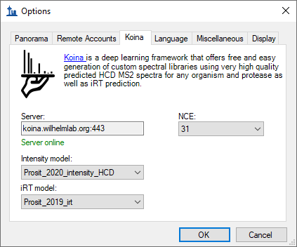
In case you cannot get an online connection to the Koina prediction server please add the PROCAL_Koina.blib spectral library file from the 4_backup subfolder. Just follow the same steps as for the PROCAL library. You can still perform the Mirror spectrum comparison of both libraries. Only the online Koina prediction used later in this tutorial will not work.
The Build Library form should look like this:

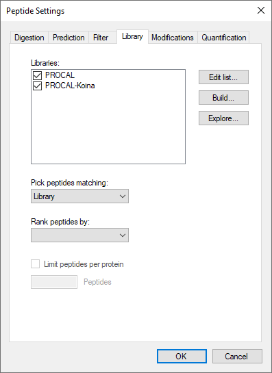
The PROCAL_Koina library is loading in the background.
In the Library Match window Spectrum dropdown list, you can now select one of the two Libraries that are active in the file. Which library spectrum is currently shown is always printed on top of the spectrum together with the peptide sequence and charge state.
Skyline can only base product-ion selection on a single spectrum from one library. Skyline will search the libraries in the order they appear in the list and use the first spectrum match it finds. With our current settings the PROCAL library is always selected first.
To compare the libraries in a mirror plot:
Compare the dotp match factor for different peptides. (TODO: Need properties grid for this)
Now you get the same mirror plot with a live Koina prediction for CE 31.
Observe how the fragmentation pattern for a peptide changes.
Find for several peptides the optimal CE setting, i.e. the setting where experimental and predicted peptides are as similar as possible. Can the initial setting of “NCE = 31” be further optimized?
You have created your spectral libraries and selected your target peptide list. In the next step you will extract the chromatogram information for the precursor and transition ions in your list from Thermo mzML files recorded with a PRM method (for settings see Appendix: Background information).
Before importing data go again to the Settings menu and click Transition Settings
The Transition Settings - Full-Scan tab should look like this:
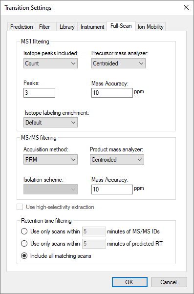
|
mzML data: All measurements in this tutorial were recorded as Thermo .raw files. To decrease file size .raw files were converted to .mzML files using MSConvert. Kessner et al., 2008. ProteoWizard: Open Source Software for Rapid Proteomics Tools Development. Bioinformatics; doi: 10.1093/bioinformatics/btn323). Martens et al., 2011. mzML – a community standard for mass spectrometry data. MCP; https://doi.org/10.1074/mcp.R110.000133 |
To import the mzML data:
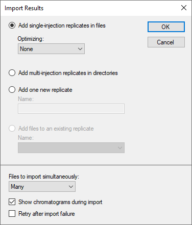
The Chromatogram information is extracted from the mzML files. With four or more cores, all files will be processed in parallel. On most laptops with two cores, the import will process two files at a time.
Once the import is finished, you want to adjust the Skyline window view. You can drag and dock any window in Skyline by left clicking on the window's top border, holding the left mouse button down, and dragging this window to a new position. Hover over one of the arrow symbols and release the window.
If the Replicate Comparison windows are floating on your Skyline document, drag and dock the Peak Areas - Replicate Comparison and Retention Times - Replicate comparison to a position on the right side of the chromatogram windows so that all information is easily visible.
On a small screen the legends take up too much space.
The main Skyline window should now look like this:
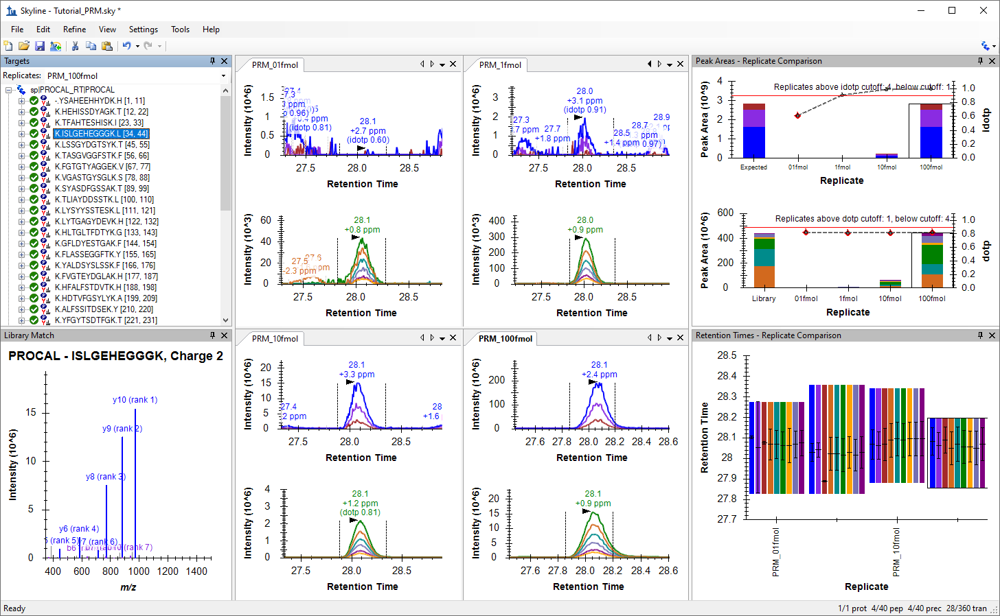
Investigate the different peptide chromatograms as follows:
Before moving to the next section:
Now that you are already familiar with some Skyline functions, you can easily explore how the PROCAL peptide dilution chromatograms look when measured with DIA (for settings see Appendix: Background information).
For this you need to start a new Skyline document and adjust the settings for DIA.
The Import Peptide Search wizard opens. You are presented with the Spectral Library page, which allows you to build a project-specific spectral library. Here you use the database search results and library prediction performed in DIA-NN3 (For settings see Appendix: Background information).
3 Demichev V, Messner CB, Vernardis SI, Lilley KS, Ralser M. DIA-NN: neural networks and interference correction enable deep proteome coverage in high throughput. Nature Methods 17, 41-44 (2020)
| Note: The “DIA_PROCAL.tsv.speclib” file was predicted with DIA-NN based on the PROCAL.fasta (see Appendix: Background information). To read in the spectra information from the measurement files requires in addition the “report.tsv” result file from the DIA-NN database search. Both files, the .speclib and report.tsv file, need to have the same naming. The measurement data files (here mzML) do not need to be located in the same folder. |
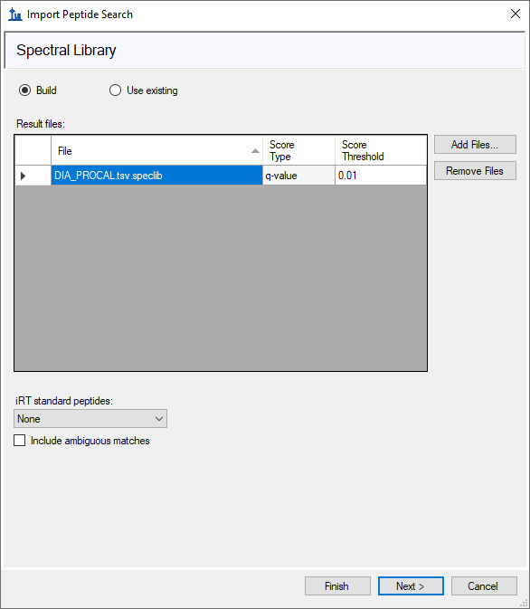
You are presented with the Extract Chromatograms form, which shows the DIA data files Skyline has auto-detected for chromatogram extraction, peak detection, and peak area calculation. The form should look like this:
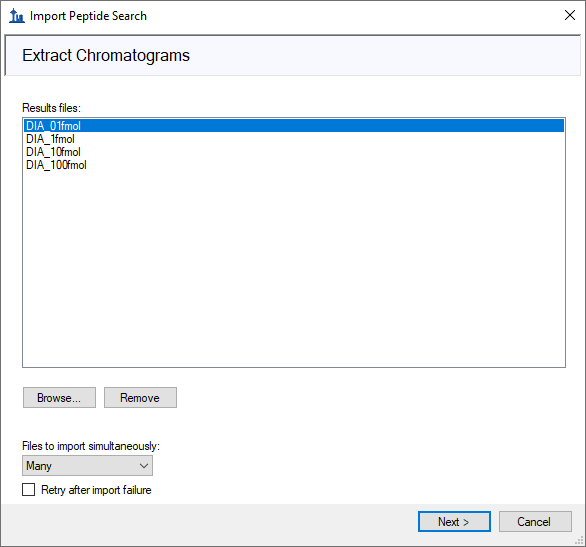
The Import wizard asks if you want to add modifications.
In the Configure Transition Settings page do the following:
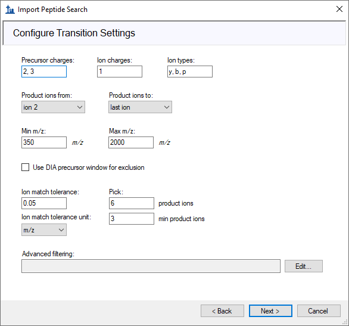
In the Configure Full-Scan Settings page do the following:
Skyline automatically reads in the DIA windows settings from the mzML file.
The Configure Full-Scan Settings page should look like this:
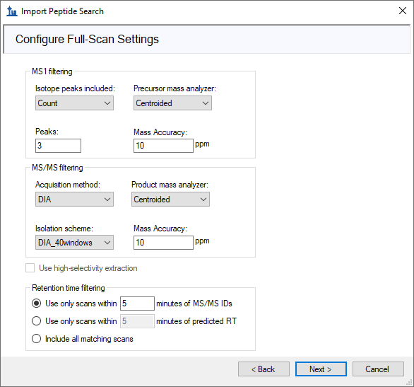
In the Import FASTA page do the following:
The Import FASTA page should look like this:
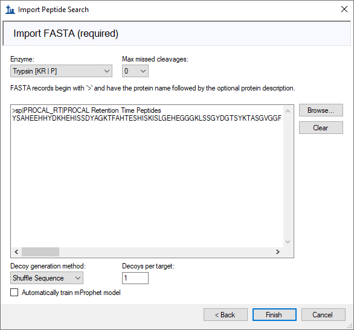
Skyline shows the Associate Proteins form with the following values for the default options:
Skyline begins extracting chromatograms from the DIA mzML files. During this time, you can already organize the Skyline windows as before. You should only need to do the following:
When the import has completed, Skyline should look like this:
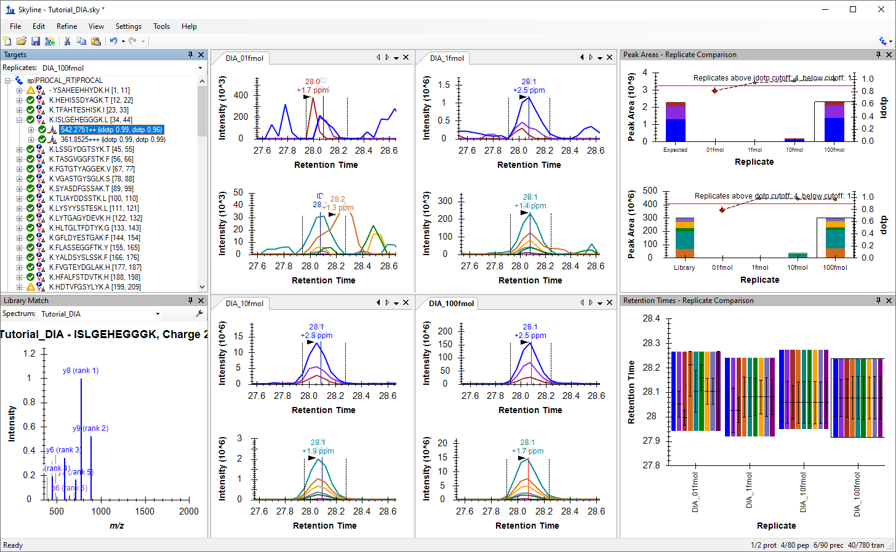
As you have loaded at the beginning of the Import DIA Peptide Search procedure the results file from a DIA-NN analysis (the PROCAL-tsv.speclib and the PROCAL-report.tsv present in the same folder), Skyline is able to show you the retention time at which DIA-NN has successfully identified each peptide in each raw file.
A successful peptide identification is indicated with a dark blue line annoted as “ID”, with the retention time. You can add or remove this peptide identification information by doing the following:
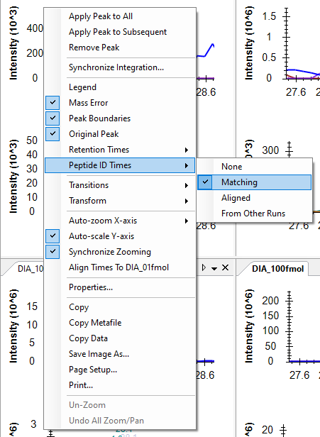
Now quantitatively investigate the different peptide chromatograms.
Before moving to the next section:
Now that you are already familiar with some Skyline functions, you can easily explore how the PROCAL peptide dilution chromatograms look when measured with DDA (for settings see Appendix: Background information).
For this you need to start a new Skyline document and adjust the settings for DDA.
The Import Peptide Search wizard opens. You are presented with the Spectral Library page, which allows you to build a project-specific spectral library. Here you use the database search results from MaxQuant4 (For settings see Appendix: Background information)
4 Cox J, & Mann M. MaxQuant enables high peptide identification rates, individualized p.p.b.-range mass accuracies and proteome-wide protein quantification. Nature Biotechnology 26, 1367-1372 (2008)
| Note: Reading the spectra information form the measurement files requires msms.txt result file and mqpar.xml file from the MaxQuant search results. The measurement data files (here mzML) must be located in the same folder. |
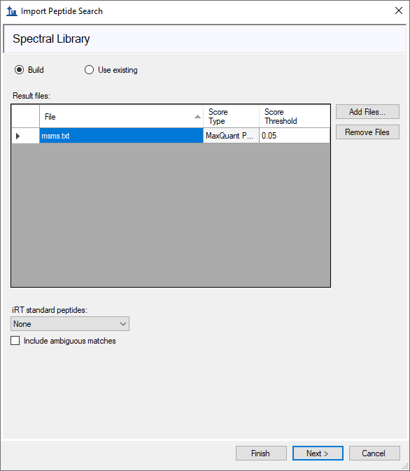
Skyline reads in the identified spectra from the MaxQuant search and creates a new spectral library file.
You are presented with the Extract Chromatograms form where the mzML file(s) used in the search are usually automatically selected if it located in the same folder as the msms.txt folder. If not navigate to the 3_DDA subfolder and select the four DDA mzML files.
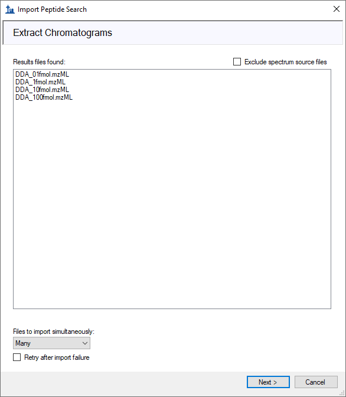
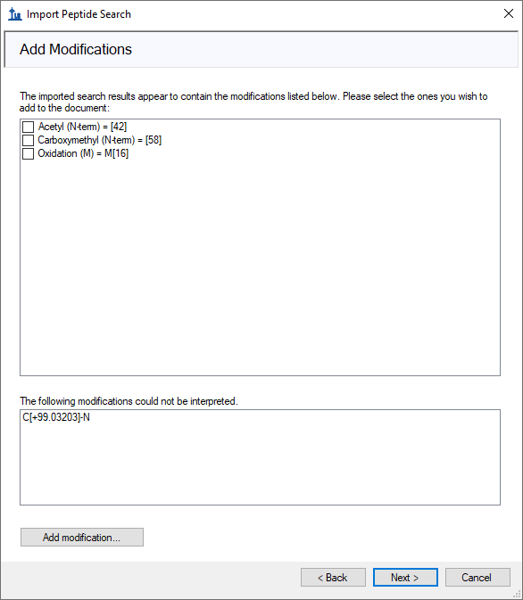
In the Configure Full-Scan Settings page do the following:
The Configure Full-Scan Settings page should look like this:
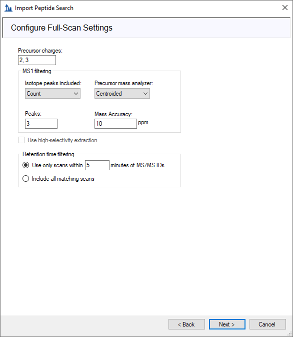
In the Import FASTA page do the following:
The Import FASTA page should look like this:
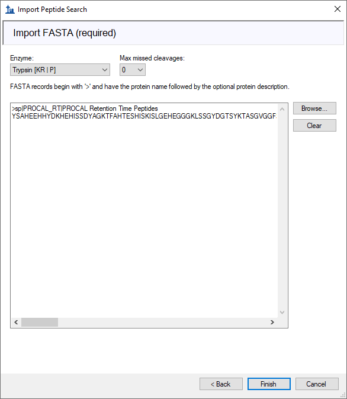
Skyline shows the Associate Proteins form with the following values for the default options:
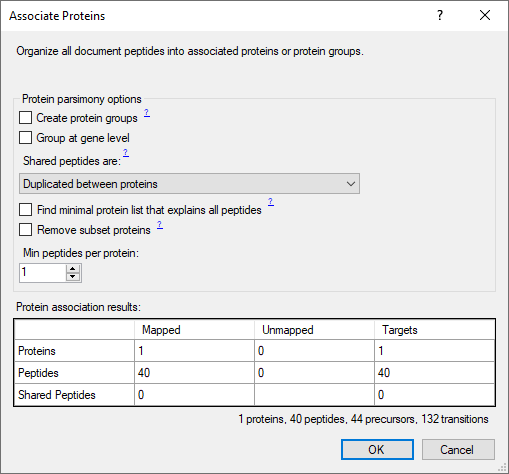
Skyline begins extracting chromatograms from the MS1 spectra in the DDA mzML files. During this time, you can already organize the Skyline windows as before. You should only need to do the following:
When the import has completed, Skyline should look like this:
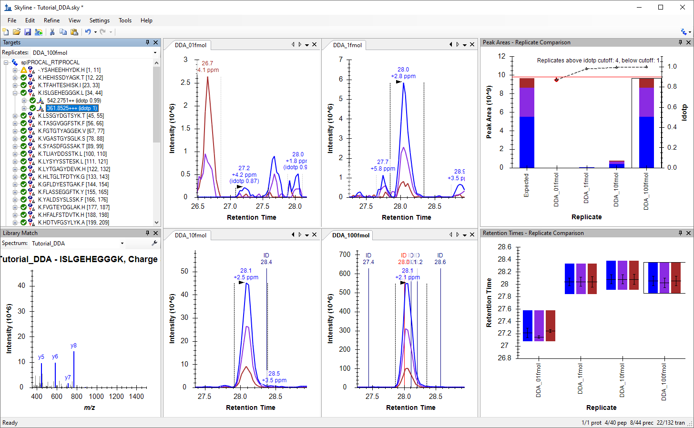
As you have imported DDA data, Skyline will only show you MS1 chromatograms but no product ion (MS2) chromatograms. However, the information if and at which retention time an MS2 spectrum was recorded that led to a successful peptide identification with MaxQuant is indicated with a dark blue line annoted as “ID”, with the retention time. You can add or remove this peptide identification information by doing the following:
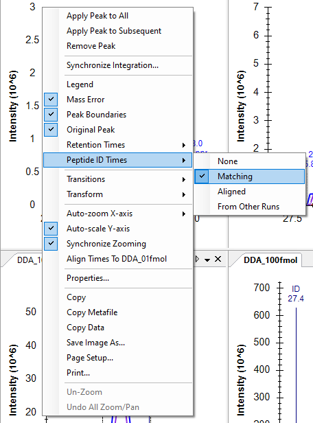
Investigate the identified MS2 spectra for all peptides in your Skyline document.
Now quantitatively investigate the different peptide MS1 chromatograms.
Before moving to the next section:
You have completed this Skyline tutorial! You have learned to import and build spectral libraries and how to investigate target peptides in PRM, DIA or DDA measurement files. The doors are open to go crazy and explore your data in more detail with the many interactive visualizations offered by Skyline.
In this tutorial we created spectral libraries for the PROCAL peptide selection. You can do the same for any peptide selection for example using public available spectral library sources like:
The Proteome Tools project offers spectral libraries recorded from synthesized peptides at different collision energies and fragmentation settings.
You can also create new spectral libraries in Skyline using other publicly available data, or peptide search results from your laboratory experiments. Skyline supports building libraries from the following search result formats:
BlibBuild (https://skyline.ms/wiki/home/software/BiblioSpec/page.view?name=BlibBuild)
LC-Settings for PRM, DIA & DDA
Ultimate 3000 RSLCnano system
Orbitrap Eclipse
| Parameter | PRM | DIA | DDA |
| MS1 | |||
| Orbitrap Resolution | 60,000 | 120,000 | 60,000 |
| Scan Range (m/z) | 360-1300 | 360-1300 | 360-1300 |
| Max IT (ms) | 50 | 50 | 50 |
| Norm.AGC Target | 100% | 100% | 100% |
| MS2 | |||
| Isolation Window | 1.3 | - | 1.3 |
| NCE (%) | 30 | 30 | 30 |
| Orbitrap Resolution | 30,000 | 30,000 | 15,000 |
| Scan Range (m/z) | 140-2000 | 200-1800 | - |
| Max IT (ms) | 120 | 54 | 22 |
| Norm.AGC Target | 400% | 1000% | 200% |
| Cycle time | - | - | 2 |
| Dynamic exclusion | - | - | 30s |
| Windows | - | 40 variable | |
MaxQant v.2.4.0.0
| Parameter | Settings |
| Type | Standard |
| Enzyme | Trypsin/P |
| Missed clevages | 1 |
| Modifications |
Fixed: Carbamidomethyl (C) Variable: Oxidation (M);Acetyl (Protein N-term) |
| Label-free quantification | None |
| Sequences | PROCAL.fasta; human reference UP000005640 Swiss Prot fasta |
| Match between runs | FALSE |
| PSM FDR | 1% |
| Protein FDR | 1% |
| Min peptide length | 7 |
DIA-NN v.1.8.1
| Parameter | Settings |
| Spectral library prediction |
PROCAL.fasta; human reference UP000005640 Swiss Prot fasta ; contaminants.fastaTrypsin/P; 1 Missed cleavages 0 Maximum number of variable modifications |
| DIA search | |
| Spectral library | PROCAL predicted library (.speclib) |
| Peptide length range | 7-30 |
| Precursor m/z range | 360-1300 |
| Fragment ion m/z range | 200-1800 |
| MBR | TRUE |
| Protein inference | Genes |
| Neural network classifier | Single-pass mode |
| Quantification strategy | Robust LC (high precision) |
| Cross-run normalization | RT-dependent |
| Library generation | Smart profiling |
| Speed and RAM usage | Optimal results |
Thermo .raw files were converted to mzML files using MSConvert (ProteoWizard: Open Source Software for Rapid Proteomics Tools Development. Darren Kessner; Matt Chambers; Robert Burke; David Agus; Parag Mallick. Bioinformatics 2008; doi: 10.1093/bioinformatics/btn323).
| Parameter | Settings |
| Output format | mzML |
| Binary encoding precision | 64-bit |
| Write Index;Use zlib compression;TPP compatibility | TRUE;TRUE;TRUE |
| Filters | Peak Picking; MS Levels 1-2 |
1 Zolg DP, Wilhelm M, Yu P, Knaute T, Zerweck J, Wenschuh H, Reimer U, Schnatbaum K, Kuster B. PROCAL: A set of 40 peptide standards for retention time indexing, column performance monitoring, and collision energy calibration. Proteomics. 2017 Nov; 17(21) ↑